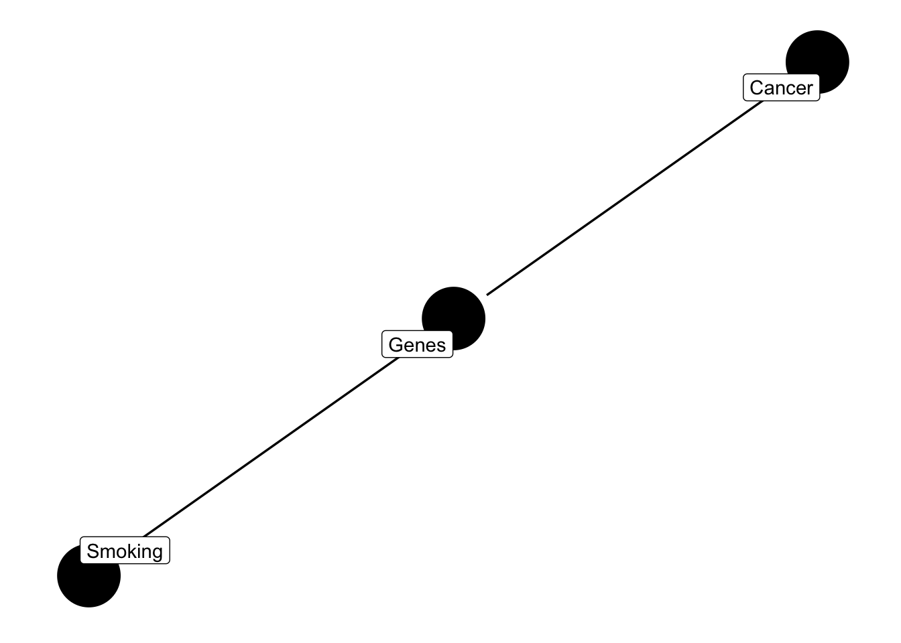
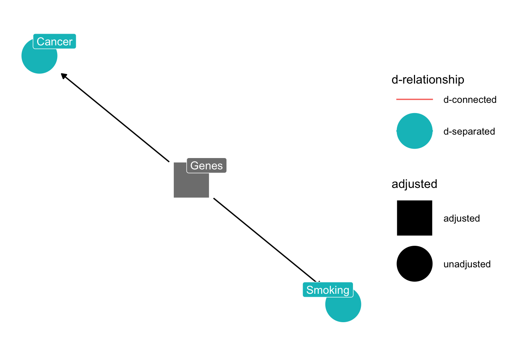
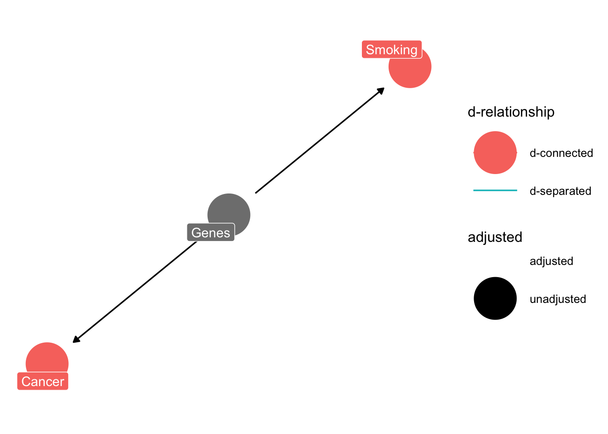
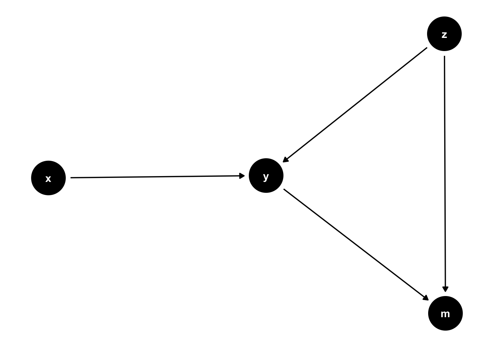
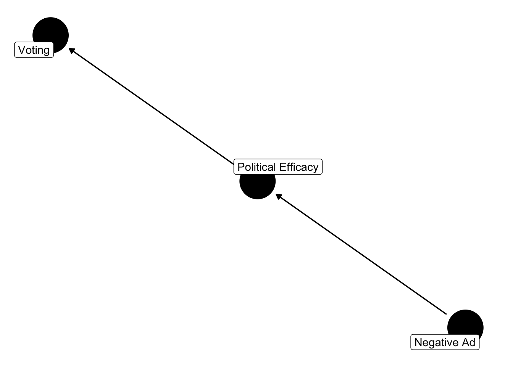
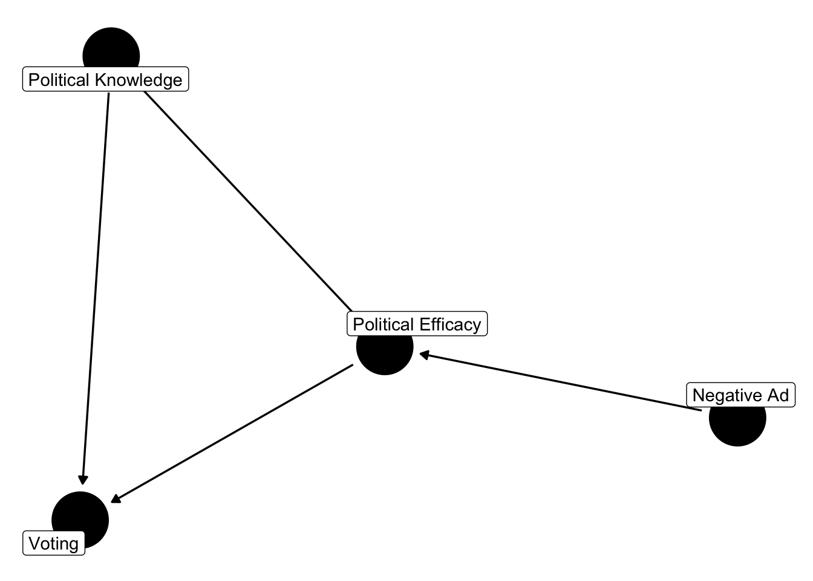

Chapter 6 Building a Model
6.1 Conservatism and Age
Build a scientific model.
Build a statistical model
Estimation, Simulation and Prediction
In Chapter 2 we discussed the Directed Acyclic Graph – DAG - and how this is a useful tool to represent theoretical relationships and build both statistical and causal models. If we focus solely on association as opposed to causation, it is entirely conceivable that you’ll document some strange relationships, like a positive association between the number of waffle houses in a state, and that state’s divorce rate (McElreath 2022), or the positive relationship between per capita ice-cream consumption and death rates among minors. If we solely focus on the statistical, ignoring the scientific these kind of counter-intuitive, downright strange relationships abound.
The DAG depicts a theoretical relationship between variables. Let’s start simple, the relationship between age and conservatism.
Of course, there is the infamous quote, falsely attribute to Winston Churchill (there’s no evidence he actually said this, but in any case)
“If you’re not a liberal when you’re 25, you have no heart. If you’re not a conservative by the time you’re 35, you have no brain.”
Conventional wisdom similarly points to this relationship. As one ages – the story goes – they develop financial (e.g., home and car ownership) and social capital (e.g., promotions, power) in a market economy, thus growing more conservative, particularly in a fiscal sense, like opposing tax increases and social welfare programs. When one reaches retirement age, the story also goes, a senior has less “skin in the game,” as their children are grown and they are no longer working, and less likely to favor liberal social welfare programs. One can find all sorts of anectodal evidence to support this narrative, like the meager social welfare programs provided in retirement states, like Arizona and Florida.
While this is the folk narrative, there is relatively little empirical evidence to support this notion. Peterson, Smith and Hibbing (2020) show no relationship between age and conservatism, instead document remarkable stability in political attitudes over the life course. Likewise, research in biopolitics by Alford, Funk, and Hibbing (2005) show that political attitudes are partially heritable, and that genetic factors explain a significant portion of the variance in political ideology. In psychology, John Jost and colleagues (Jost et al 2004) show that conservatism is firmly rooted in stable personality traits – like authoritarianism and social dominance orientation – and epistemological orientations (e.g., need for cognitive closure).
Let’s consider some of these competing narratives in a DAG. We’ll start with a simple model, moving to a more complex model, all the while considering the role of age in causing political conservatism.
Here’s the simple model:
#
library(ggdag)
dagify(conservatism ~ age,
labels = c(
"conservatism" = "Political Conservatism",
"age" = "Age")) %>% ggdag(text = FALSE, use_labels = "label") + theme_dag()
6.2 The Confound
6.2.1 The Fork
Here’s the simple model:
#
library(ggdag)
dagify(conservatism ~ household + education ,
household ~ education + age,
labels = c(
"conservatism" = "Political Conservatism",
"household" = "Personal Wealth",
"education" = "Post Secondary Education",
"age" = "Age")) %>% ggdag(text = FALSE, use_labels = "label") + theme_dag()
This seems plausible – age influences the accumulation of personal wealth, personal wealth perhaps leads to conservatism, with the goal of maximizing one’s wealth. Fiscal conservatism advocates a smaller federal government, lower taxes, and less regulation. However, post-secondary education also relates to personal wealth – as a college degree generally translates to higher paying jobs. Post-secondary education is also related to political conservatism. But in the United States, it’s typically found that college and graduate degrees translate to political liberalism. Let’s ignore age for the time being, focusing on post-secondary education, the fork.
#
library(ggdag)
dagify(conservatism ~ household + education ,
household ~ education,
labels = c(
"conservatism" = "Political Conservatism",
"household" = "Personal Wealth",
"education" = "Post Secondary Education",
"age" = "Age")) %>% ggdag(text = FALSE, use_labels = "label") + theme_dag()
# Imagine a population that in which 30% have a college or post-graduate degree
education = rbinom(1000, 1, 0.30)
# predict personal wealth
wealth = 1 + 0.8*education + rnorm(1000, 0, 0.5)
political_conservatism = 1 + 0.3*wealth - 0.5*education + rnorm(1000, 0.5)
# Notice the change
lm(political_conservatism ~ wealth) %>% summary()##
## Call:
## lm(formula = political_conservatism ~ wealth)
##
## Residuals:
## Min 1Q Median 3Q Max
## -3.5857 -0.6682 0.0091 0.6764 2.9065
##
## Coefficients:
## Estimate Std. Error t value Pr(>|t|)
## (Intercept) 1.52219 0.07269 20.941 <2e-16 ***
## wealth 0.11145 0.05278 2.111 0.035 *
## ---
## Signif. codes: 0 '***' 0.001 '**' 0.01 '*' 0.05 '.' 0.1 ' ' 1
##
## Residual standard error: 1.006 on 998 degrees of freedom
## Multiple R-squared: 0.004447, Adjusted R-squared: 0.00345
## F-statistic: 4.458 on 1 and 998 DF, p-value: 0.03498##
## Call:
## lm(formula = political_conservatism ~ wealth + education)
##
## Residuals:
## Min 1Q Median 3Q Max
## -3.3907 -0.7116 0.0075 0.6916 3.1265
##
## Coefficients:
## Estimate Std. Error t value Pr(>|t|)
## (Intercept) 1.38508 0.07359 18.820 < 2e-16 ***
## wealth 0.37062 0.06331 5.854 6.49e-09 ***
## education -0.57791 0.08197 -7.051 3.33e-12 ***
## ---
## Signif. codes: 0 '***' 0.001 '**' 0.01 '*' 0.05 '.' 0.1 ' ' 1
##
## Residual standard error: 0.9827 on 997 degrees of freedom
## Multiple R-squared: 0.05173, Adjusted R-squared: 0.04983
## F-statistic: 27.19 on 2 and 997 DF, p-value: 3.171e-12#
coef(lm(political_conservatism ~ wealth + education))["wealth"] -
coef(lm(political_conservatism ~ wealth))["wealth"]## wealth
## 0.2591769set.seed(123) # For reproducibility
# Load necessary libraries
library(plotly)
simulate_difference <- function(n_simulations = 1000, n_samples = 1000, p_education = 0.30) {
differences <- numeric(n_simulations)
for (i in 1:n_simulations) {
# Simulate data
education <- rbinom(n_samples, 1, p_education)
wealth <- 1 + 0.8 * education + rnorm(n_samples, 0, 0.5)
political_conservatism <- 1 + 0.3 * wealth - 0.5 * education + rnorm(n_samples, 0, 0.5)
# Fit models
model1 <- lm(political_conservatism ~ wealth)
model2 <- lm(political_conservatism ~ wealth + education)
# Calculate the difference in the coefficient of wealth
diff <- coef(model2)["wealth"] - coef(model1)["wealth"]
differences[i] <- diff
}
return(differences)
}
# Run the simulation
set.seed(123) # For reproducibility
differences <- simulate_difference()
# Generate the histogram using Plotly
plot_ly(x = ~differences, type = "histogram") %>%
layout(title = "Differences in Coefficient of Wealth, conditioning on Education",
xaxis = list(title = "Difference"),
yaxis = list(title = "Count"))In this fictitious example, wealth is related to political conservatism. But, when we condition on education, the relationship between wealth and conservatism changes. According to our scientific model, education predicts both wealth and conservatism. It is a confound. It should not be ignored.
\[z \perp y \mid x\] Another common way to state this is, “z is conditionally independent of y given x.” This kind of relationship is called a fork. It has an effect on two variables, \(x\) and \(y\). Forks are interesting because they’re often described in terms of “confounding variables.”
If \(u\) is a confound, failing to condition on \(u\), a common cause of both \(y\) and \(x\) means that if we ignore \(u\). The independence will no longer hold.
\[x \not \perp y \]
If we don’t condition on the fork – the confound “u” – we may find a relationship where none exists; or if we do detect a relationship, it’s likely to be wrong This is why we’re often encouraged to specify theoretically informed models, models that “control for” the effect of potential confounding variables.
6.3 Causal Estimands and the Do Operator
An estimand is a quantity that we want to estimate. Perhaps we wish to form an estimate of the causal effect of wealth on political conservatism. We could do this if we were able to exert control over wealth. For instance, if we as researchers were able to randomly assign people to a high or low wealth condition, we could then formulate an estimate of the causal effect of wealth on political conservatism, the difference between the two groups.
We obviously can’t do this, but we could simulate a situation where this is conceivable. Imagine two datasets – they’re identical, with the exception of one thing – we simply assign wealth to be high or low. We create two versions of the data; the only difference being the wealth value. Now, we might use this as as data, fed to the model. Then we perhaps just average the predicted score, political conservatism in two “worlds,” one where everyone is “high wealth” and the other where everyone is “low wealth.”
It is a parameter of the population. In the case of a causal estimand, we are interested in the effect of a treatment on an outcome. The treatment is often denoted as \(X\), the outcome as \(Y\). The causal estimand is the effect of \(X\) on \(Y\). This is often denoted as \(E[Y|do(X=x)]\). The \(do\) operator is a way to denote that we are interested in the effect of \(X\) on \(Y\) when \(X\) is set to a particular value. This is a causal estimand
6.4 An Example: Smoking and Cancer
Up until somewhat recently, the link between smoking and cancer was contested. While epidemiological studies in the 1950s and 1960s suggested a link, doctors, scientists, and health professionals were slower to adopt anti-smoking recommendations and regulations. Elements of the debate were advanced by prominent scientists and statisticians. Indeed, Ronald Fisher – one of the founders of modern statistics (think F-test, ANOVA, among many others) – was a regular pipe smoker who was vocal in his opposition to a purported smoking and cancer link, instead propagating (at the time plausible) alternative explanations, like there may be an unobserved variable – a gene – that predisposes some to smoking as well as lung cancer (Pearl 2014). Or, what had been a report that a non-trivial number of smokers purported to rarely inhale. It wasn’t until 1964 The Surgeon General’s Report on Smoking and Health firmly stated there to be a causal link between smoking and cancer in males.
Here is a simplification of the debate.

While scientists had suggested a causal link between \(smoking \rightarrow tar \rightarrow cancer\), one argument was that perhaps some unobserved variable, a gene, predisposes people to smoking and developing lung cancer. Let’s write out the model with a confounder, genes.
dagify(smoking ~ genes, cancer ~ genes,
labels = c(
"cancer" = "Cancer",
"tar" = "Tar",
"smoking" = "Smoking",
"genes" = "Genes"
)) %>% ggdag(text = FALSE, use_labels = "label") + theme_dag()
Note that such a common cause implies that
\[smoking \perp cancer \mid gene \] A common way to say this is that smoking is d-separated from cancer by conditioning on genes.
dagify(smoking ~ genes, cancer ~ genes,
labels = c(
"cancer" = "Cancer",
"tar" = "Tar",
"smoking" = "Smoking",
"genes" = "Genes"
)) %>% ggdag_drelationship(from = "smoking", to = "cancer", controlling_for = "genes", text = FALSE, use_labels = "label") + theme_dag()
Recall, this is the definition of independence.
\[p(x,y)=p(x) p(y) \hspace{0.5in} \texttt{Independence}\]
This is actually quite intuitive if you think about it. If \(p(x)\) and \(p(y)\) are entirely unrelated – knowing one does not help you know the other – then the probability of observing the two events is simply the product. If I flip a coin from 1989 and one from 1977, the flips are independent. Knowing the outcome of the 1989 coin flip is inconsequential for the outcome of the 1977 coin flip. By extension, if two events are independent, then the conditional probability \(p(x|y)=p(x)\). Think briefly about what this means in context of the coin flip. Given that the Canadian coins is head, what is the probability that the 1989 coin is heads?
Returning to the example, if we don’t condition on “genes”, the two will be d-connected.
dagify(smoking ~ genes, cancer ~ genes,
labels = c(
"cancer" = "Cancer",
"tar" = "Tar",
"smoking" = "Smoking",
"genes" = "Genes"
)) %>% ggdag_drelationship(from = "smoking", to = "cancer", text = FALSE, use_labels = "label") + theme_dag()
Another type of fork is the inverted fork. The inverted fork is just that. Instead of multiple arrows extending away from a common node, multiple arrows point to that common node.

This is a common problem in the social sciences; it forms the basis for mediation analysis. Notice that \(z\) can affect \(m\) in a couple ways. One is \(z\rightarrow m\). Another is \(z \rightarrow y \rightarrow m\). The problem is that \(y\) is a function of \(x\) and \(z\). \(y\) is a collider variable. Perhaps we estimate a model where \(m\) is the outcome, \(z\) and \(y\) are predictors. The consequence of conditioning on a collider \(y\) is that we open a path to \(m\) that is unintended.
dagify(y~x+ z, m~z+y) %>% ggdag_drelationship(from = "z", to = "y", control = "m", text = TRUE) + theme_dag()
\(x\) and \(y\) are unrelated, but they’re d-connected by conditioning on \(y\). This is a problem, conditioning on a collider introduces bias, and correlations where none exist.
Let’s consider a different application, from literature on advertising and political turnout (Lau and Pomper 2004; Ansolabahere, Iyengar and Simon 1999). Let’s consider the finding that negative advertising influences turnout, mediated by efficacy.
library(ggdag)
dagify(turnout ~ efficacy, efficacy ~ negativity,
labels = c(
"turnout" = "Voting",
"efficacy" = "Political Efficacy",
"negativity" = "Negative Ad")) %>% ggdag(text = FALSE, use_labels = "label") + theme_dag()
But what if,
library(ggdag)
dagify(turnout ~ efficacy + knowledge, efficacy ~ negativity + knowledge,
labels = c(
"turnout" = "Voting",
"knowledge" = "Political Knowledge",
"efficacy" = "Political Efficacy",
"negativity" = "Negative Ad")) %>% ggdag(text = FALSE, use_labels = "label") + theme_dag()
This is a collider problem. Political efficacy is a collider. Including efficacy in the model will bias the parameter estimates. For instance, conditioning on political efficacy will induce a correlation between voting and negativity that doesn’t exist. Although they should be independent, they’re d-connected by efficacy. Collider bias is different from confounding bias. In the case of confounding bias, one must control for the confounder. In the case of a collider, one should not condition on the collider.
library(dplyr)
# simulate data from a dag
dat = dagify(turnout ~ efficacy + knowledge , efficacy ~ negativity + knowledge,
labels = c(
"turnout" = "Voting",
"knowledge" = "Political Knowledge",
"efficacy" = "Political Efficacy",
"negativity" = "Negative Ad")) %>% tidy_dagitty() %>%
simulate_data(N = 1000, b.default = 0.5)
# partial correlation
cor(dat$turnout, dat$negativity, method = "pearson")## [1] 0.2010022## efficacy negativity turnout
## efficacy 1.0000000 0.4814201 0.7557395
## negativity 0.4814201 1.0000000 -0.2484551
## turnout 0.7557395 -0.2484551 1.0000000Although negativity has a positive impact absent efficacy, the partial correlation is negative.